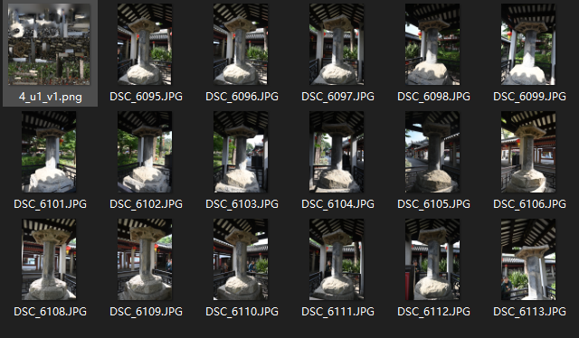
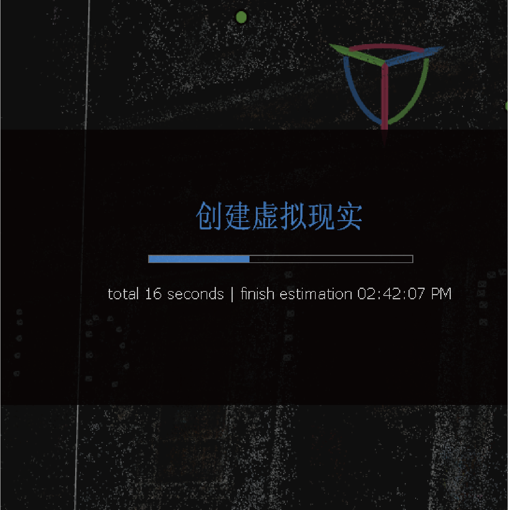
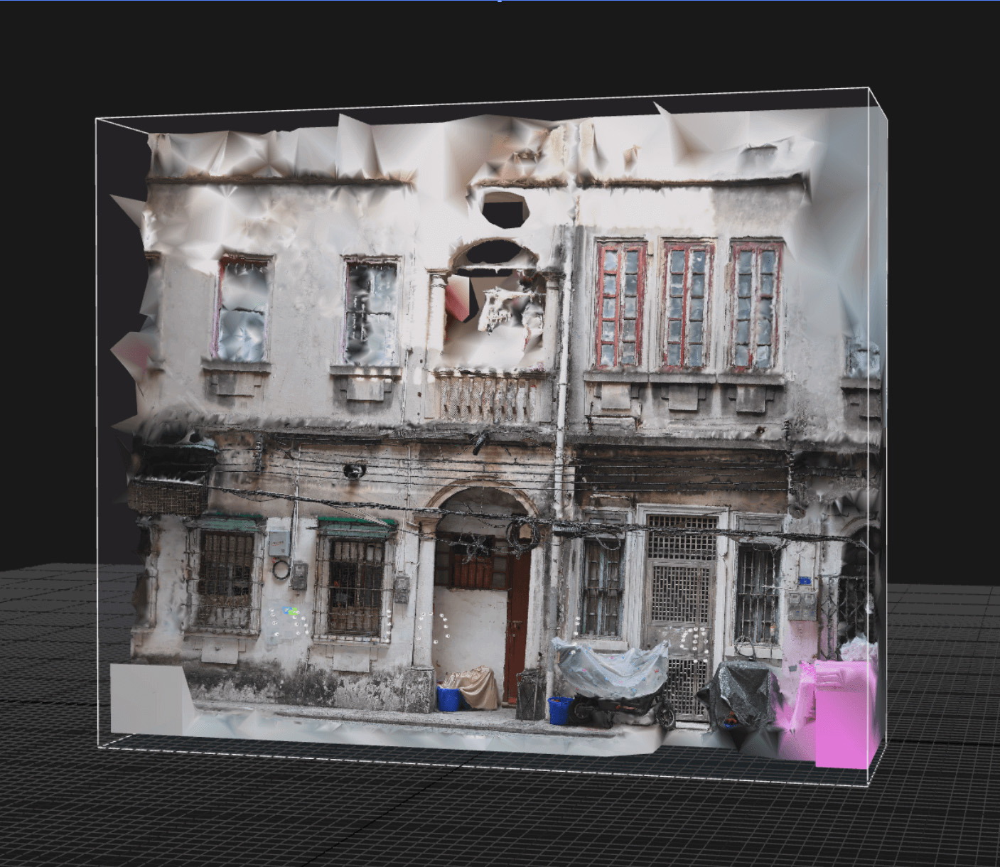
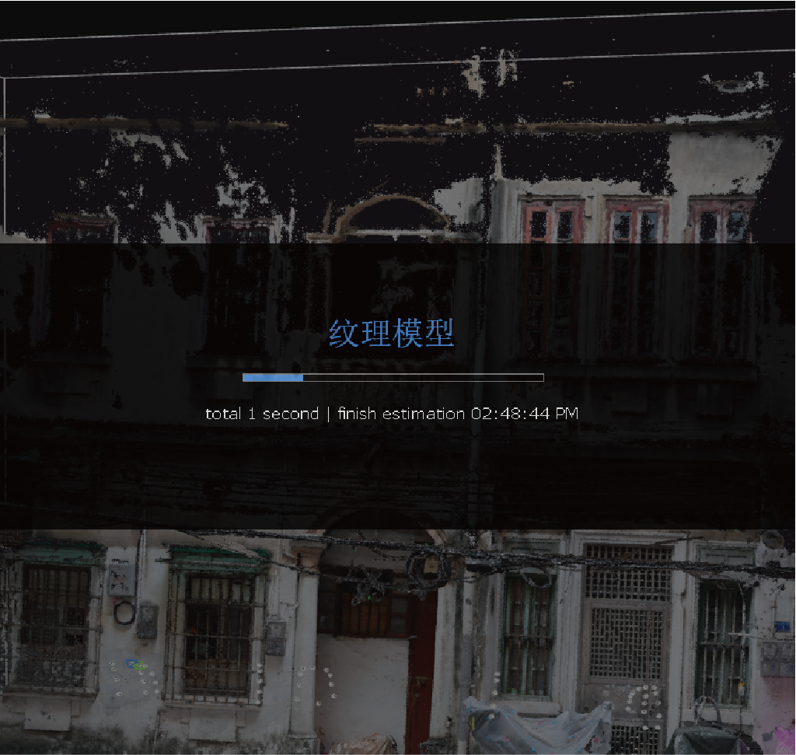
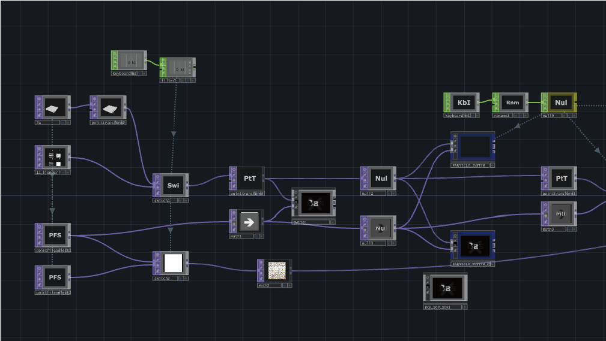
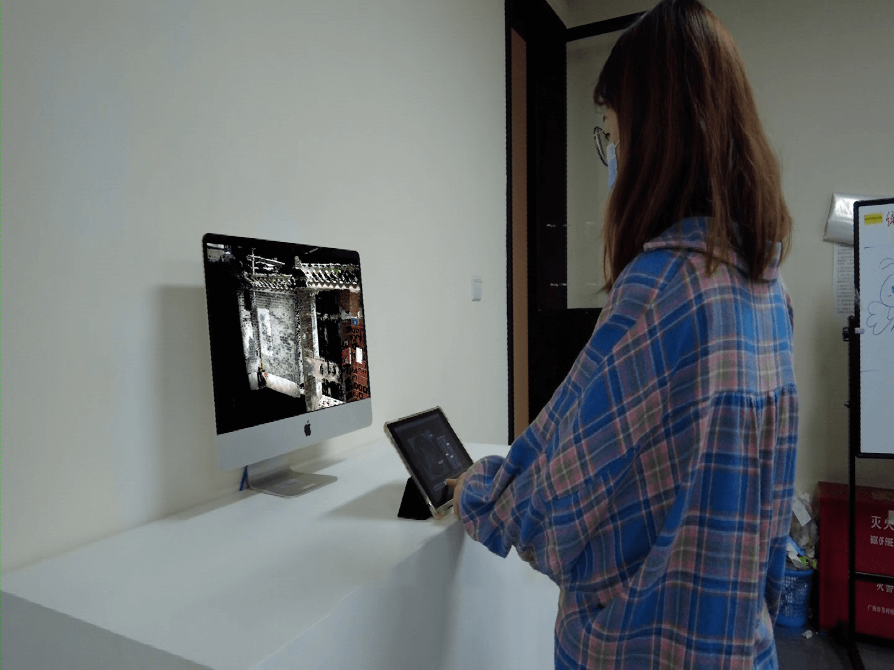
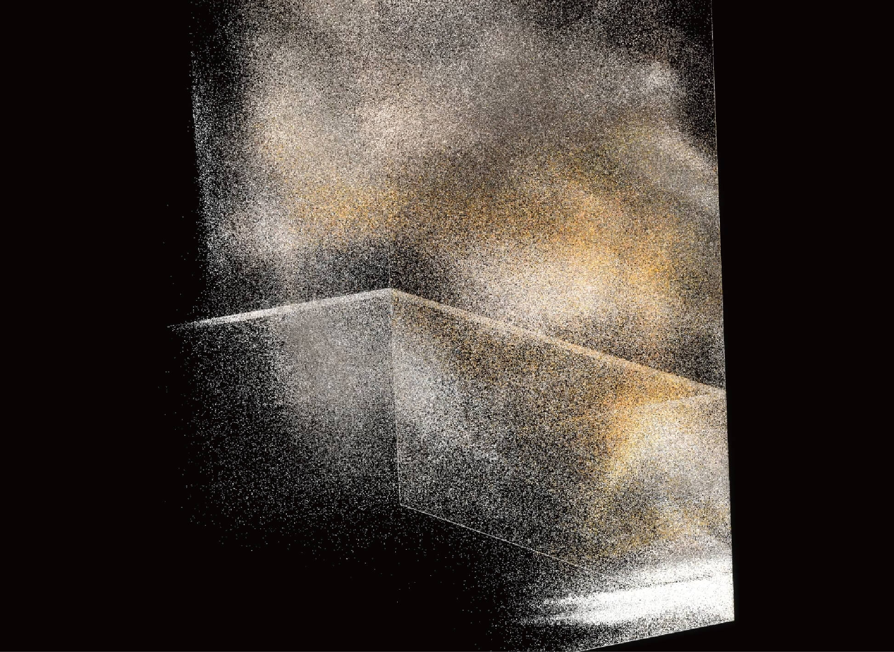
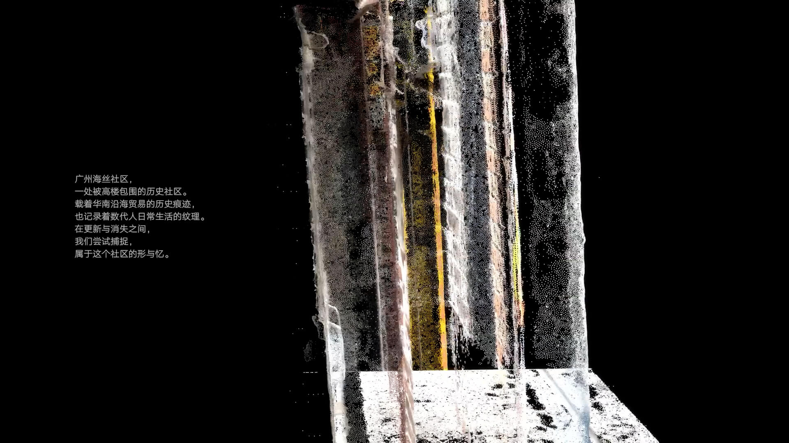

迁形共忆
项目背景 Concept
《迁形共忆》是一件以广州海丝社区为背景的互动艺术作品。海丝社区作为海上丝绸之路的重要遗存，承载了多元文化交汇的历史意义。
作品结合点云扫描、数字建模与交互设计技术，重构历史建筑，展现中外文化交流的记忆流动。我们利用无人机点云扫描捕捉建筑数据，通过 3D 建模还原社区内寺庙、商贸街区等历史空间。
负责内容 My Role
- 模型扫描与修改 (RealityCapture)
- 概念策划与视频剪辑
- 交互逻辑设计 (TouchDesigner)
技术栈 Tech Stack
Point Cloud / RealityCapture / TouchDesigner / 3D Mapping
重建流程 Reconstruction Process
从物理世界到数字资产的完整工作流：

01. 点云数据采集
使用轻型无人机和相机设备，对海丝社区内的寺庙、居民楼进行高精度扫描。

02. 模型清理与优化
去除噪点与多余信息，优化数据质量，确保模型的精确性与完整性。

03. 3D 模型重建
基于清理后的点云数据，利用建模软件生成高精度三维网格模型。

04. 纹理处理
对模型进行纹理贴图和光影优化，还原建筑的历史质感。

05. 点云模型输出
将最终完成的数字模型导出，准备进入实时渲染引擎。

06. TD 效果制作
导入 TouchDesigner 互动设计平台，编写粒子特效与交互逻辑。
交互逻辑 Interaction Logic

01. 感应与触发
设置触摸屏或体感设备捕捉观众动作，通过交互机制生成反馈指令。

02. 点云形态变幻
根据互动输入，实时改变数字建筑的点云形态，实现虚拟空间中的动态迁移。

03. 文化记忆触发
每次互动都会触发不同的文化记忆片段，形成动态叙事。